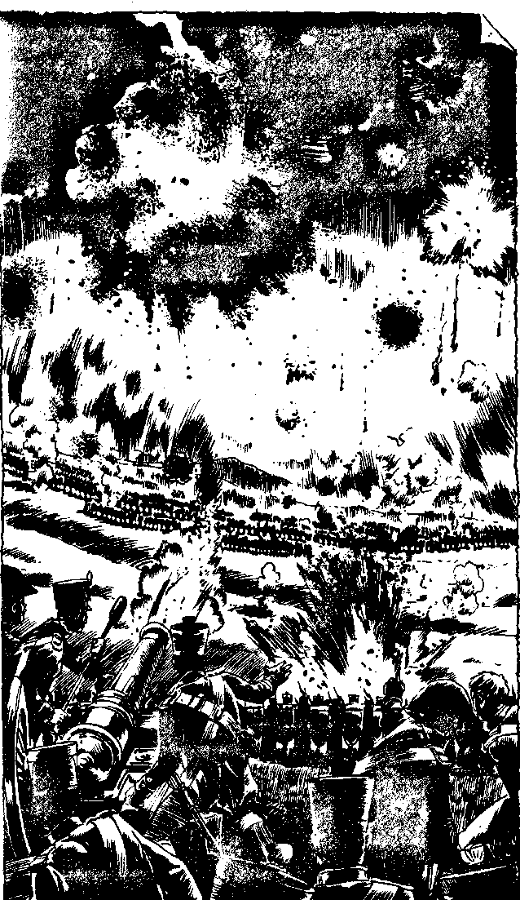

416
[Score a T]
You may lie in your Autodoc during the journey and gain up to 12 Endurance points. Falcon's Wing rematerialises at the same instant as Bloodhound's Machine, Hunter. The digital readout shows the date: 7th September, 1812. You are at the edge of some woods and, once again, the hologram generator disguises the machine in the form of a group of fir trees. The outside camera shows an amazing sight: two colourful armies face each other along a line three miles long. It is early morning, but already the battlefield is becoming shrouded in the smoke of a thousand cannon. You ask CAIN for a historical report. CAIN replies, The French Emperor, Napoleon I, has conquered most of Europe and has invaded Russia with a large army. Today, the Russian commander in chief, Kutusov, has decided to give battle, here at Borodino. The French will win a victory, but it will not be the crushing victory that Napoleon needs to force the Russians to give in before the awful Russian winter kills the Frenchmen for them.' Thanking CAIN for his brief history, you ask him what could be done to change the Timelines at this battle. CAIN responds quickly, 'Marshal Ney will win an advantage for the French, but Murat's cavalry fail to exploit this. Napoleon, unwell, will not send in his best troops, the Imperial Guard, to support Ney at the critical moment. If he were persuaded to do so he would win a crushing victory. The same might occur if Murat's cavalry were used to better effect. The Russians would be forced to surrender and Napoleon would remain master of Europe. In this case, Europe would continue to be ravaged by wars for several decades. Countless more people would die and there would be great changes in the year 3033. I do not have enough data to outline these with any great probability of being correct.' You nod and are preparing to leave Falcon's Wing when CAIN chimes again, unbidden, 'You will remember of course, Falcon, that one of your ancestors is an Aide-de-Camp, carrying messages for Marshal Ney.'
'Of course, CAIN,' you smile and ask him to activate the Molecular Converter. CAIN programmes a uniform into the Converter and you are soon dressed in the most stylish uniform imaginable. A short, white jacket, fronted with gold braid, red trousers with a black stripe down the side, a short black cape trimmed with gold, called a Pelisse, and your Psionic Enhancer has become a bearskin helmet with a white plume. Leaving Falcon's Wing, you are amused to see Bloodhound dressed as lavishly as yourself in scarlet and blue. He suggests that you acquire horses and this you manage to do, finding the horses of some French scouts picketed nearby. Bloodhound shows you a map of the battlefield he has had printed by his own version of CAIN. The nearest troops to you are some French and Polish, commanded by the Polish Count, Poniatowski. As you ride towards the battlefield your holo-detector bleeps. There is a Time Machine nearby. Do you:
| Investigate the Time Machine? | Turn to 297 |
| Search the battlefield for the Renegade Lord? | Turn to 49 |